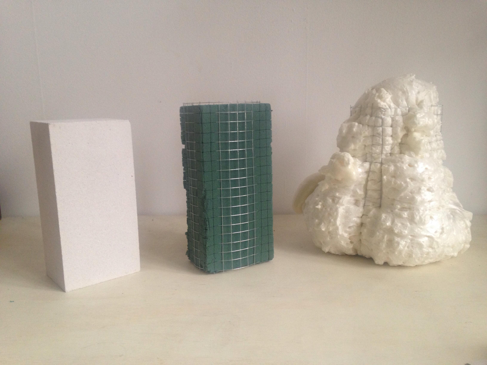

References

THE (EXTRA) ORDINARY ENCYCLOPEDIA by Suzanne Bakkum

THE (EXTRA) ORDINARY ENCYCLOPEDIA by Suzanne Bakkum

THE (EXTRA) ORDINARY ENCYCLOPEDIA by Suzanne Bakkum

MARIA BIGAJ
Using organic materials like fruit and vegetables, Polish artist Maria Bigaj (b. 1991) makes poetic sculptures in which she explores the natural process of transformation and decay. She also manages to create some confusion by playing with the properties of the material and giving it a new twist. Thus, a melon or pumpkin appears to be a stable connecting element, while steel bent into geometric shapes seems fragile. But what happens after a time? Bigaj subtly subverts our assumptions, playing with the unexpected results of decay, prompting us to look more closely.
process // images // references // archive //
Sketches
